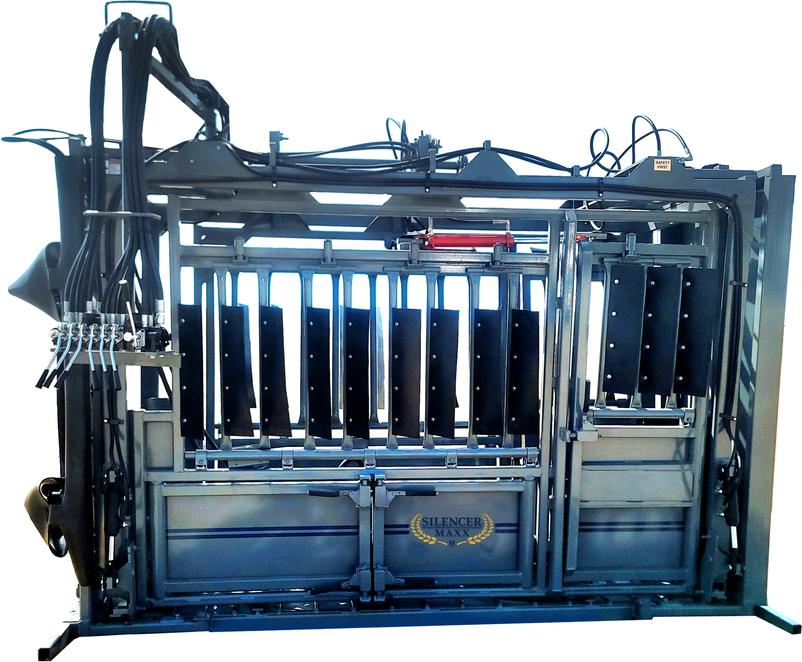
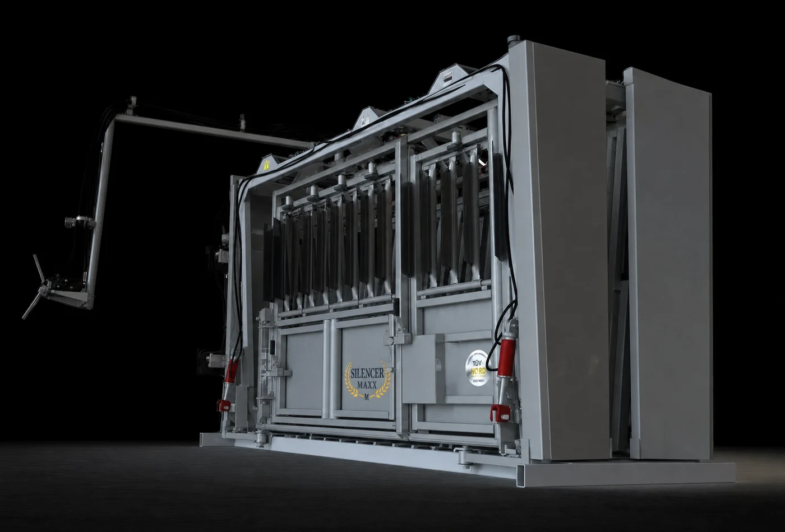
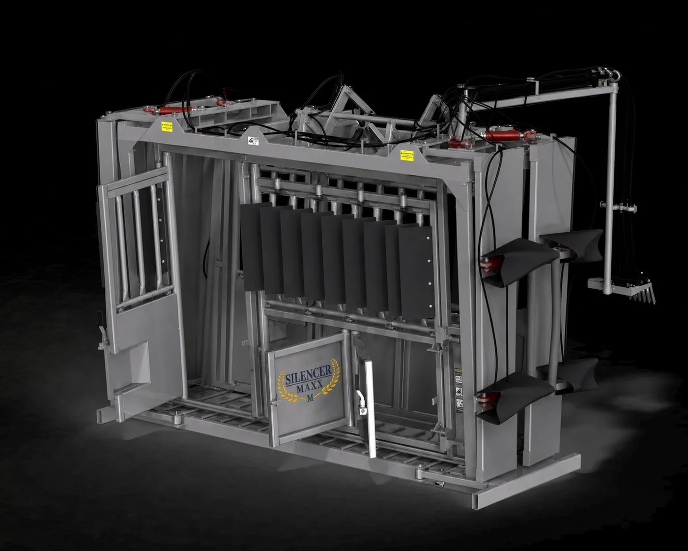
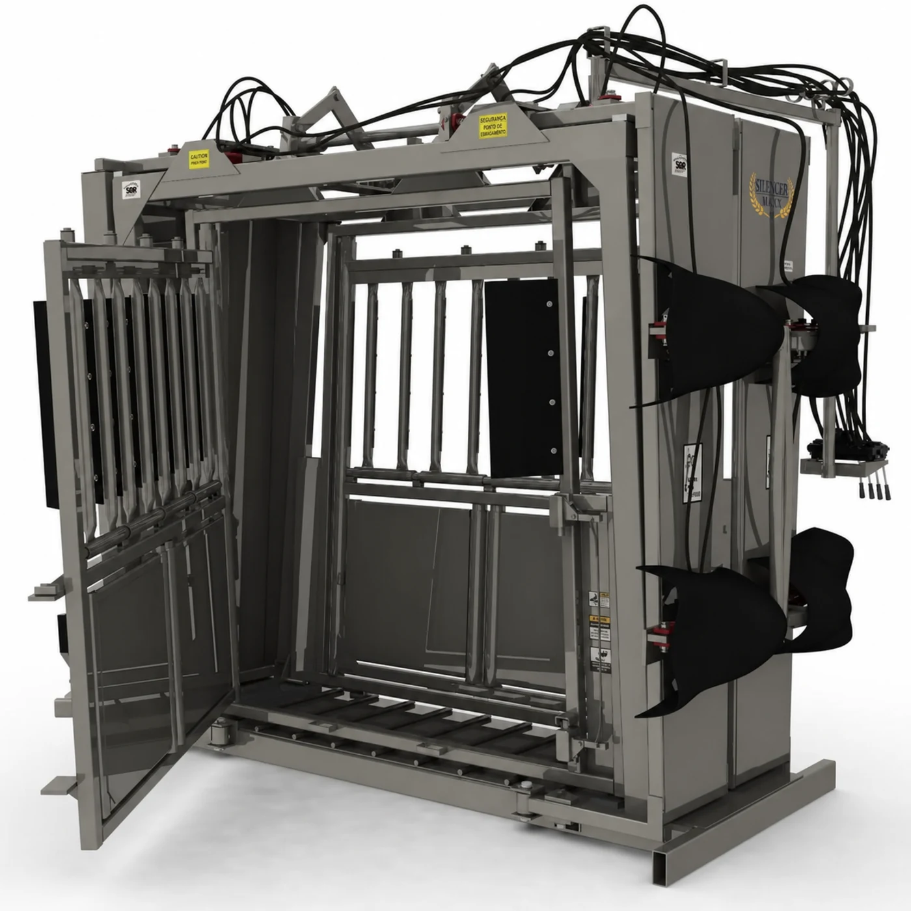
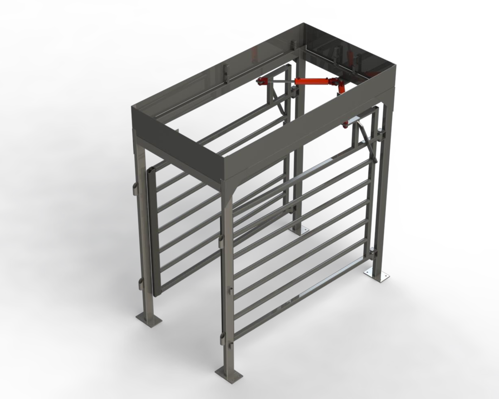
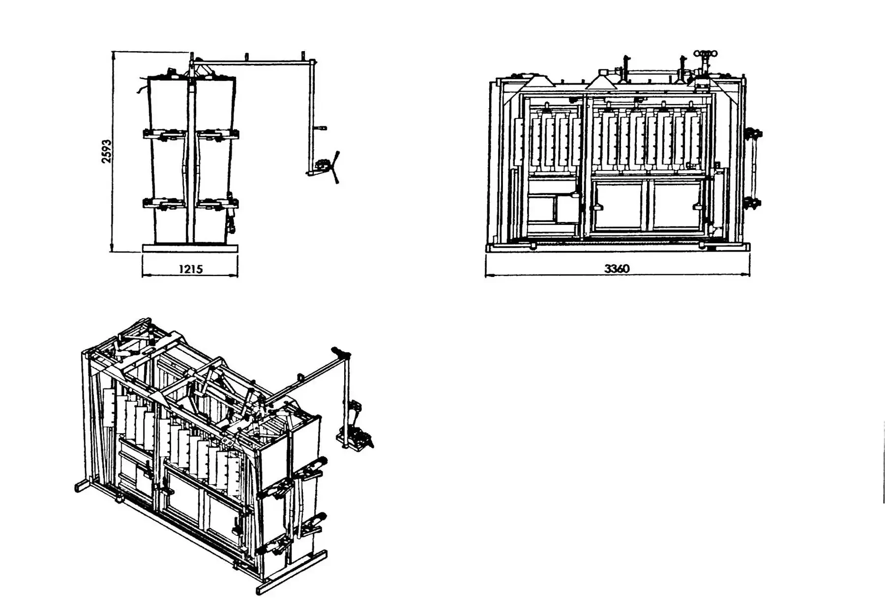

Operação com menos ruído
Barras móveis e soluções de fechamento reduzem impactos metálicos e ajudam a preservar um ambiente de manejo mais calmo.
01 Contenção hidráulica bovina
SILENCER® / hidráulico / engenharia Moly
Engenharia hidráulica, estrutura 100% em aço e acessos funcionais reunidos em uma solução feita para uma rotina mais segura, silenciosa e precisa.

02 Filme em destaque
Uma apresentação direta do equipamento, conduzida por uma voz reconhecida no setor.
Clique para assistir ao conteúdo completo03 Engenharia aplicada ao manejo
Cada abertura, comando e ponto de acesso foi pensado para manter o animal avançando e dar ao operador uma leitura clara da operação.
Barras móveis e soluções de fechamento reduzem impactos metálicos e ajudam a preservar um ambiente de manejo mais calmo.
Persianas bloqueiam distrações externas e as aberturas amplas favorecem uma passagem mais direta pela estação.
Apertos hidráulicos independentes abraçam o corpo do animal e dão ao operador mais precisão durante a contenção.
Portas inferiores, barras superiores e saídas de emergência agilizam procedimentos, inspeção, limpeza e manutenção.
04 Modelos da linha Tronco
A escolha parte do espaço disponível e do tipo de procedimento. Compare a configuração documentada de cada modelo.


Vista de acessoTronco
A configuração mais completa para operações que exigem acesso veterinário, segurança adicional e maior área de trabalho.

Tronco
Contenção hidráulica completa em um conjunto mais curto, indicado para estruturas que precisam aproveitar melhor o espaço.
04.1 Comparativo técnico
Configurações elétricas disponíveis em versões monofásica e trifásica, conforme definição do projeto.
| Característica | Tronco Pró | Tronco Compacto |
|---|---|---|
| Estrutura | 100% em aço | 100% em aço |
| Dimensões externas | 1,215 × 3,360 × 2,593 m | 1,22 × 2,60 × 2,55 m |
| Peso de projeto | 2.600 kg | A confirmar |
| Contenção do corpo | Aperto inferior independente | Aperto superior e inferior independentes |
| Acesso veterinário | Portão bilateral dedicado | Acessos inferiores e superiores |
| Segurança adicional | Barras anticoice hidráulicas | Pescoceira hidráulica |
| Comandos | Móveis e bilaterais | Braço móvel articulado |
Medidas e componentes finais devem ser confirmados no desenho do projeto antes da fabricação.
05 Complemento da linha
Instalado após o tronco, o módulo hidráulico organiza a saída do animal sem quebrar o ritmo da operação.

06 Ficha técnica / Tronco Pró
Referência de projeto do conjunto com piso vazado. Use estas medidas para uma avaliação inicial e valide as interfaces no projeto executivo.

Resumo para avaliação inicial. O desenho executivo deve ser validado antes da fabricação.
Antes de instalar, confirme
Antes de preparar a base: confirme alimentação elétrica, área de operação, corredor de entrada, sentido de saída e necessidade do módulo apartador com a equipe de projeto.
Solicitar avaliação técnica →07 Experiência em campo
Relatos de clientes que conhecem as exigências da operação no dia a dia.
Um relato de quem utiliza o equipamento e conhece as exigências da operação no dia a dia.
Esta área está preparada para receber novas histórias de produtores e referências do setor.
08 Projeto sob medida
Conte à equipe como funciona o seu manejo. A recomendação do modelo, dos comandos e dos complementos parte da rotina real da fazenda.